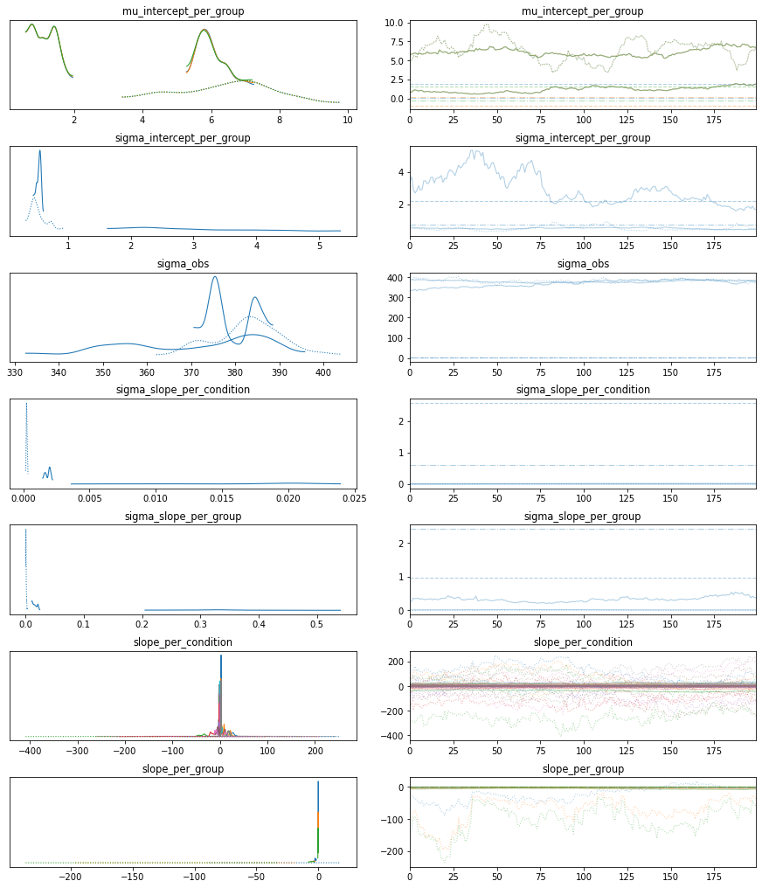
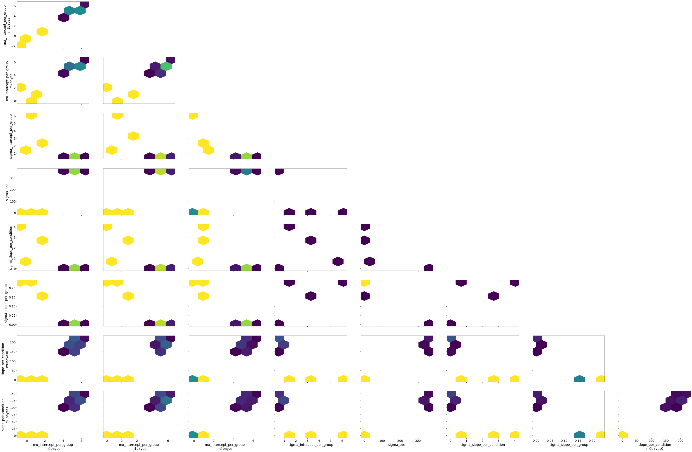

Neurons example with nominal stim strengths¶
Generate some data¶
from bayes_window import models, fake_spikes_explore, BayesWindow, BayesRegression
from bayes_window.generative_models import generate_spikes_stim_strength
from importlib import reload
import numpy as np
import altair as alt
df = generate_spikes_stim_strength(#mouse_response_slopes=np.arange(5, 40, 5),
n_trials=20,
n_neurons=6,
n_mice=3,
dur=5,
# mouse_response_slope=40,
# overall_stim_response_strength=5
)
window = BayesRegression(df=df, y='isi', treatment='stim_strength', condition='neuron_x_mouse', group='mouse')
window.fit(do_make_change=False, dist_y='gamma', progress_bar=True,
add_group_slope=True
)
window.chart
changing x to neuron_x_mouse:Q
window.posterior['slope_per_condition']
window.plot_model_quality()

